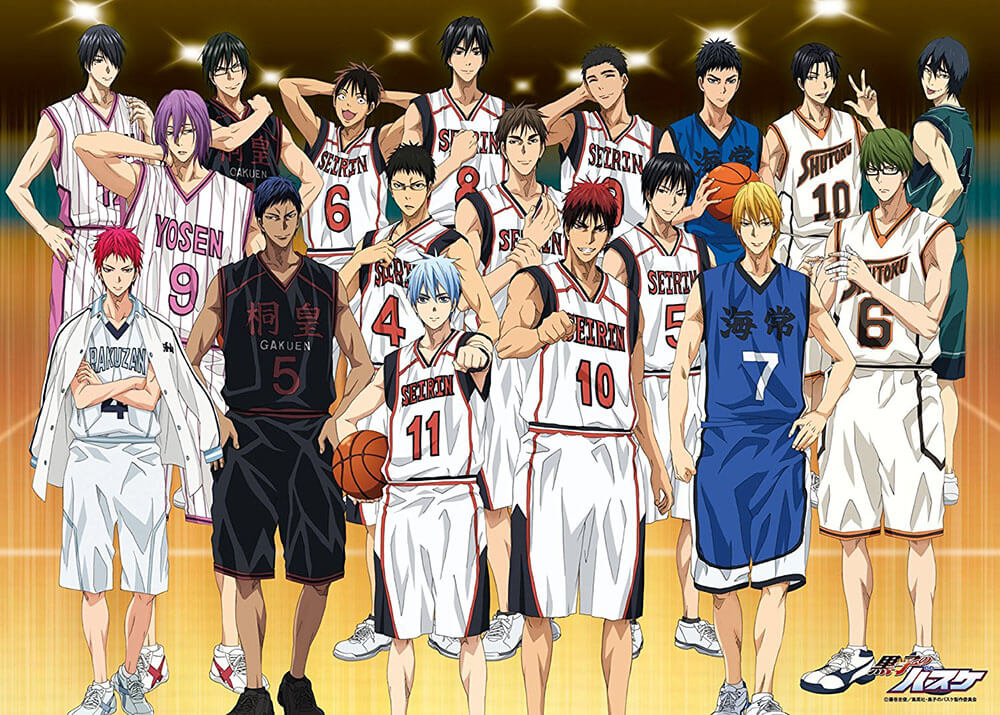

<DOCTYPE html>
<html lang = "ja">
<head>
<meta charset="utf-8">
<meta name=”viewport” content=”width=device-width,initial-scale=1.0″>
<title>黒子のバスケ</title>
<link rel="stylesheet" href=kuroko.CSS">
<style>
body{
  padding: 60px;
  margin:  60px;
  background-image: url("3ec862b93a8e4d199b13b6d2d25f3470.jpg");
  background-repeat: no-repeat;
  background-attachment: fixed;
  background-size: cover;
}

</style>
</head>
<body>

<h1 align="center">あらすじ</h1> 
<br><h2  align="center"> 
<br>帝光中学校バスケットボール部。部員数は100を超え全中3連覇を誇る超強豪校。
<br>その輝かしい歴史の中でも特に「最強」と呼ばれ、無敗を誇った10年に1人の天才が
<br>5人同時にいた世代は「キセキの世代」と呼ばれている。「キセキの世代」には
<br>奇妙な噂があった。誰も知らない、試合記録も無い、にもかかわらず、天才5人が
<br>一目置いていた選手がもう1人、「幻の6人目」がいたと。</br>


</body>


</html>